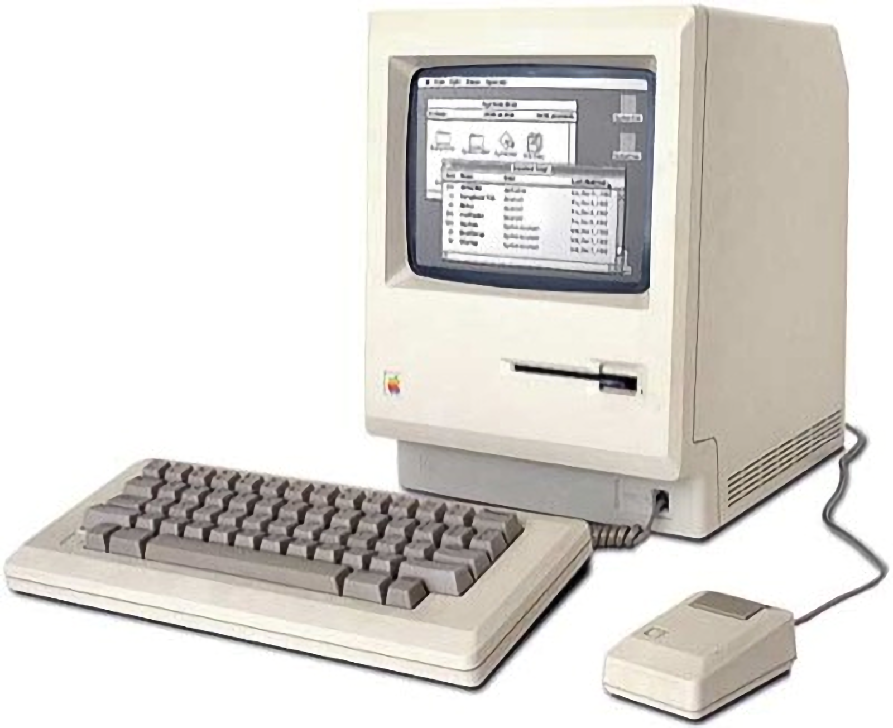
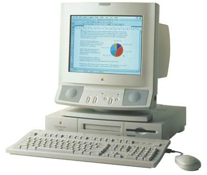

Apple ][
SpÇcifications
- Processeur: MOS Technology 6502, 8bit, 1MHz
- RAM: 4 kb (Extensible Ö 64 kb)
- Systäme d'exploitation: Apple DOS, Apple ProDOS
Dates
- Date de Sortie: 1977
- Fin de Production: 1988
Autres informations
- Prix Ö la sortie: 1298$ (5499,56$ avec inflation)
- Le Apple ][ Çtait le premier ordinateur personnel produit Ö grand Çchelle

Macintosh 128k
SpÇcifications
- Processeur: Motorola MC68000, 16/32bit, 8MHz
- RAM: 128 kb
- Systäme d'exploitation: System 1, System 3.2
Dates
- Date de Sortie: 1984
- Fin de Production: 1985
Autres informations
- Prix Ö la sortie: 2495$ (5579,95$ avec inflation)
- Connu Ö l'origine sous le nom de Macintosh, c'est le premier ordinateur ayant un prix abordable qui incluait une interface graphique
Power Macintosh 6100
SpÇcifications
- Processeur: PowerPC 601, 32bit, 66MHz
- RAM: 8 mb (Extensible Ö 72 mb)
- Systäme d'exploitation: System 7.1.2, System 9.1
Dates
- Date de Sortie: 1994
- Fin de Production: 1996
Autres informations
- Prix Ö la sortie: 1700$ (2695,46$ avec inflation)
- Le Power Macintosh 6100 est le premier mac utilisant un processeur PowerPC
